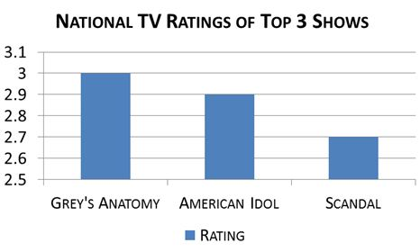
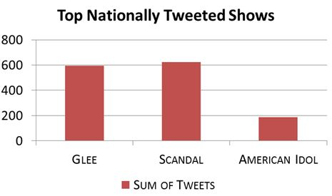

<!--I completed this project for an Undergraduate course on web GIS...BACK IN 2013!
Enjoy browsing what people were watching back in 2013. When The Walking Dead was all the rage.
Though I wrote most of this code, there may be bits and pieces I copied and adapted from online tutorials and StackOverflow.

By Andrea Minano Goldring-->
<!DOCTYPE html>
<html>
<head>
	<title>Mapping TV Ratings with Tweets</title>
	<meta charset="utf-8" />

	<meta name="viewport" content="width=device-width, initial-scale=1.0">

	<link rel="stylesheet" href="https://unpkg.com/leaflet@1.9.4/dist/leaflet.css" integrity="sha256-p4NxAoJBhIIN+hmNHrzRCf9tD/miZyoHS5obTRR9BMY=" crossorigin=""/>
    <script src="https://unpkg.com/leaflet@1.9.4/dist/leaflet.js" integrity="sha256-20nQCchB9co0qIjJZRGuk2/Z9VM+kNiyxNV1lvTlZBo=" crossorigin=""></script>
	<!--<link rel="stylesheet" href="http://cdn.leafletjs.com/leaflet-0.7.3/leaflet.css" />-->
	<!--[if lte IE 8]><link rel="stylesheet" href="http://cdn.leafletjs.com/leaflet-0.4/leaflet.ie.css" /><![endif]-->
	<script type="text/javascript" src="https://www.google.com/jsapi"></script>
    <script type="text/javascript">
	 		function reverseValue(value){
			if (value == 1){return "The First 48, NHL, Vampire Diaries, American Idol";}
			else if (value == 2){return "Vampire Diaries, Scandal";}
			else if (value == 3){return "NHL, Grey's Anatomy";}
			else if (value == 4){return "Glee";}
			else if (value == 5){return "Community, NHL";}
			else if (value == 6){return "NHL, Vampire Diaries";}
			else if (value == 7){return "Beauty and the Beast, Glee";}
			else if (value == 8){return "Community, Wife Swap";}
			else if (value == 9){return "American Idol, Scandal";}
			else if (value == 10){return "NHL, Project Runway";}
			else if (value == 11){return "Wife Swap";}
			else if (value == 12){return "NHL, Vampire Diaries, Project Runway";}
			else if (value == 13){return "Grey's Anatomy, The Braxton Family";}
			else if (value == 14){return "NHL";}
			else if (value == 15){return "Grey's Anatomy";}
			else if (value == 16){return "Vampire Diaries";}
			else if (value == 17){return "Parks and Recreation, Community, Glee, Grey's Anatomy";}
			else if (value == 18){return "Glee, NHL";}
			else if (value == 19){return "NHL, Vampire Diaries, Grey's Anatomy";}
			else if (value == 20){return "Beauty and the Beast, Glee, Freakshow, Grey's Anatomy, Project Runway";}
			else if (value == 21){return "Glee, NHL, Vampire Diaries, Grey's Anatomy, American Idol, Scandal";}
			else if (value == 22){return "Community, NHL, Chelsea Lately, Grey's Anatomy, Scandal";}
			else if (value == 23){return "Property Wars, Freakshow, NHL, Vampire Diaries, Grey's Anatomy";}
			else if (value == 24){return "Glee, Scandal";}
			else if (value == 25){return "Wife Swap, American Idol, Scandal";}
			else if (value == 26){return "American Idol";}
			else if (value == 27){return "Vampire Diaries, Grey's Anatomy";}
			else if (value == 28){return "Glee, Vampire Diaries, American Idol";}
			else if (value == 29){return "Glee, Vampire Diaries";}
			else if (value == 30){return "Glee, American Idol";}
			else if (value == 31){return "Community, Glee, Vampire Diaries";}
			else if (value == 32){return "The First 48, The Braxton Family";}
			else if (value == 33){return "Community, Vampire Diaries, Grey's Anatomy, Scandal";}
			else if (value == 34){return "The Braxton Family";}
			else if (value == 35){return "Scandal";}
			else if (value == 36){return "Glee, Grey's Anatomy";}
			else if (value == 37){return 'Vampire Diaries, American Idol';}
			else {return 'Others';}
		}
	 
      function drawChart(in_array) {
		var arr = new Array(40);
		arr = [['TV Show', 'Number of Tweets']];
		var count = 1;
		var name;
		var name_len;
		var num_var;
		for (var i = 0; i < in_array.length; i++){
			name = reverseValue(in_array[i][0]);
			num_var = in_array[i][1];
			name_len = name.split(", ");
			for (var j = 0; j < name_len.length; j++){
				arr[count] = [name_len[j], num_var];
				count = count + 1;
			}
		}
		
		var data = google.visualization.arrayToDataTable(arr);

        var chart = new google.visualization.PieChart(document.getElementById('chart_div'));
        chart.draw(data, {title: 'Number of Tweets per TV Show'});
      }
	  
      google.load("visualization", "1", {packages:["corechart"]});
      google.setOnLoadCallback(drawChart);
    </script>
	<style>
	
		body {
		background: #000000;
		}
		
		#map {
		position: fixed; 
		top: 0; 
		left: 0; 
	
		/* Preserve aspet ratio */
		min-width: 100%;
		min-height: 100%;
		}
		
		.popup {
		width: 800px;
		}
		
		h3 {
		text-align: center;
		}
		h4 {
		font: 14px Courier; 
		text-align: center;
		color: #FF3300;
		}
		
		h5 {
		text-align: center;
		font: 12px Courier;
		}

		h6 {
		text-align: right;
		font: 12px Courier;
		}
		
		A:link {font: verdana; font-size: 14px; font-weight: bold; color: #000000; text-decoration: none}
		A:visited {font: verdana; font-size: 14px; font-weight: bold; color: #000000; text-decoration: none}
		A:active {font: verdana; font-size: 14px; font-weight: bold; color: #000000; text-decoration: none}
		A:hover {font: verdana; font-size: 14px; font-weight: bold; color: #FF6600}
		
		.info {
			padding: 6px 8px;
			text-align: center;
			font: 14px/16px Arial, Helvetica, sans-serif;
			background: white;
			background: rgba(255,255,255,1);
			box-shadow: 0 0 15px rgba(0,0,0,0.2);
			width: 280px;

		}

		.info2 {
			padding: 6px 8px;
			font: 14px/16px Arial, Helvetica, sans-serif;
			border-radius: 5px;
		}
		
		.info h2 {
			margin: 0 0 5px;
			color: #000000;
		}
		
		.legend {
			text-align: left;
			line-height: 18px;
			bottom: 25px;
			color: #555;
		}
		.legend i {
			width: 18px;
			height: 18px;
			float: left;
			margin-right: 8px;
			opacity: 0.7;
		}
	</style>
</head>
<body>
	<div id="map"></div>
	
	<!--<script src="http://cdn.leafletjs.com/leaflet-0.7.3/leaflet.js"></script>-->
	<script src="data/thursday.json"></script>
	<script src="data/thursday/thursday.json"></script>
	<script src="data/thursday/thurs_1600penn.json"></script>
	<script src="data/thursday/thurs_beauty.json"></script>
	<script src="data/thursday/thurs_braxton.json"></script>
	<script src="data/thursday/thurs_chelsea.json"></script>
	<script src="data/thursday/thurs_comic.json"></script>
	<script src="data/thursday/thurs_community.json"></script>
	<script src="data/thursday/thurs_first48.json"></script>
	<script src="data/thursday/thurs_freakshow.json"></script>
	<script src="data/thursday/thurs_glee.json"></script>
	<script src="data/thursday/thurs_greys.json"></script>
	<script src="data/thursday/thurs_idol.json"></script>
	<script src="data/thursday/thurs_nhl.json"></script>
	<script src="data/thursday/thurs_parks.json"></script>
	<script src="data/thursday/thurs_property.json"></script>
	<script src="data/thursday/thurs_runway.json"></script>
	<script src="data/thursday/thurs_scandal.json"></script>
	<script src="data/thursday/thurs_vampire.json"></script>
	<script src="data/thursday/thurs_wifeswap.json"></script>
	
	<script>
		//create map object and import basemap
		var map = L.map('map').setView([37.8, -88], 4);
		
		L.tileLayer('https://{s}.basemaps.cartocdn.com/light_nolabels/{z}/{x}/{y}.png', {
			maxZoom: 18,
			attribution: '&copy; <a href="https://www.openstreetmap.org/copyright">OpenStreetMap</a> contributors, &copy; <a href="https://carto.com/attribution">CARTO</a>',
		}).addTo(map);
		
		// title of the map
		var info = L.control();

		info.onAdd = function (map) {
			this._div = L.DomUtil.create('div', 'info');
			this.update();
			return this._div;
		};

		info.update = function (props) {
			this._div.innerHTML = "<h2>Tweet-Mapping TV Ratings<br>Thursday, March 21, 2013</h2><br>" + 
			"<div class='info2 legend'><b>Top Tweeted TV Show</b><br><i style ='background:#000066'></i>American Idol<br>" +
			//"<i style ='background:#33CC66'></i>American Idol & Others<br>" +
			"<i style ='background:#990099'></i>Glee<br>" +
			//"<i style ='background:#FFCC33'></i>Glee & Others<br>" +
			"<i style ='background:#FF6600'></i>NHL<br>" +
			"<i style ='background:#FF0000'></i>Scandal<br>" +
			"<i style ='background:#FF6666'></i>Vampire Diaries<br>" +
			//"<i style ='background:#33CC00'></i>Vampire Diaries & Others<br>" +
			"<i style ='background:#006600'></i>Wife Swap<br>" +
			"<i style ='background:#FFCC33'></i>Various Shows<br>" +
			
			"<br>" +
			"" +
			
			"</div>";
		};
				   
		info.addTo(map);

		var info2 = L.control();

		info2.onAdd = function (map) {
			this._div = L.DomUtil.create('div', 'info');
			this.update();
			return this._div;
		};

		info2.update = function (props) {
			this._div.innerHTML = "<a href='index.html'>MON  </a><a href='tuesday.html'>TUE  </a><a href='wednesday.html'>WED  </a><a href='thursday.html'>THU  </a><a href='friday.html'>FRI  </a><a href='saturday.html'>SAT  </a><a href='sunday.html'>SUN  </a>";
		};

		info2.addTo(map);
		
		function getValue(name){
		if (name == 'The First 48, NHL, Vampire Diaries, American Idol'){return 1;}
		else if (name == 'Vampire Diaries, Scandal'){return 2;}
		else if (name == "NHL, Grey's Anatomy"){return 3;}
		else if (name == 'Glee'){return 4;}
		else if (name == 'Community, NHL'){return 5;}
		else if (name == 'NHL, Vampire Diaries'){return 6;}
		else if (name == 'Beauty and the Beast, Glee'){return 7;}
		else if (name == 'Community, Wife Swap'){return 8;}
		else if (name == 'American Idol, Scandal'){return 9;}
		else if (name == 'NHL, Project Runway'){return 10;}
		else if (name == 'Wife Swap'){return 11;}
		else if (name == 'NHL, Vampire Diaries, Project Runway'){return 12;}
		else if (name == "Grey's Anatomy, The Braxton Family"){return 13;}
		else if (name == 'NHL'){return 14;}
		else if (name == "Grey's Anatomy"){return 15;}
		else if (name == 'Vampire Diaries'){return 16;}
		else if (name == "Parks and Recreation, Community, Glee, Grey's Anatomy"){return 17;}
		else if (name == 'Glee, NHL'){return 18;}
		else if (name == "NHL, Vampire Diaries, Grey's Anatomy"){return 19;}
		else if (name == "Beauty and the Beast, Glee, Freakshow, Grey's Anatomy, Project Runway"){return 20;}
		else if (name == "Glee, NHL, Vampire Diaries, Grey's Anatomy, American Idol, Scandal"){return 21;}
		else if (name == "Community, NHL, Chelsea Lately, Grey's Anatomy, Scandal"){return 22;}
		else if (name == "Property Wars, Freakshow, NHL, Vampire Diaries, Grey's Anatomy"){return 23;}
		else if (name == 'Glee, Scandal'){return 24;}
		else if (name == 'Wife Swap, American Idol, Scandal'){return 25;}
		else if (name == 'American Idol'){return 26;}
		else if (name == "Vampire Diaries, Grey's Anatomy"){return 27;}
		else if (name == 'Glee, Vampire Diaries, American Idol'){return 28;}
		else if (name == 'Glee, Vampire Diaries'){return 29;}
		else if (name == 'Glee, American Idol'){return 30;}
		else if (name == 'Community, Glee, Vampire Diaries'){return 31;}
		else if (name == 'The First 48, The Braxton Family'){return 32;}
		else if (name == "Community, Vampire Diaries, Grey's Anatomy, Scandal"){return 33;}
		else if (name == 'The Braxton Family'){return 34;}
		else if (name == 'Scandal'){return 35;}
		else if (name == "Glee, Grey's Anatomy"){return 36;}
		else if (name == 'Vampire Diaries, American Idol'){return 37;}
			else {return 9999;}
		}
		
		//create pop up window
		//MUST CHANGE THIS!!
		function onEachFeature_Thursday(feature, layer) {
		if (feature.properties && feature.properties.th_max1 && feature.properties.th_max2 && feature.properties.th_max3){
			var max1 = getValue(feature.properties.th_max1);
			var max2 = getValue(feature.properties.th_max2);
			var max3 = getValue(feature.properties.th_max3);
			var other = getValue('Others');
			layer.bindPopup("<b><h3>" + feature.properties.NAME10 + "<br></h3>Most Popular TV Show(s): </b>" + feature.properties.th_max1 + "<br><br><center><button onclick='drawChart([[" + max1 + ", " + feature.properties.th_count1 + "],[" + max2 + ", " + feature.properties.th_count2 + "],[" + max3 + ", " + feature.properties.th_count3 + "],[" + other + ", " + feature.properties.th_other + "]])'>Click for more info</button><div id='chart_div' style='width: 320px; height: 200px;'></center></div>");
		}
		else if (feature.properties.th_max1 && feature.properties.th_max2){
			var max1 = getValue(feature.properties.th_max1);
			var max2 = getValue(feature.properties.th_max2);
			var other = getValue('Others');
			layer.bindPopup("<b><h3>" + feature.properties.NAME10 + "<br></h3>Most Popular TV Show(s): </b>" + feature.properties.th_max1 + "<br><br><center><button onclick='drawChart([[" + max1 + ", " + feature.properties.th_count1 + "],[" + max2 + ", " + feature.properties.th_count2 + "],[" + other + ", " + feature.properties.th_other + "]])'>Click for more info</button><div id='chart_div' style='width: 320px; height: 200px;'></center></div>");
		}
		else if (feature.properties.th_max1){
			var max1 = getValue(feature.properties.th_max1);
			var other = getValue('Others');
			layer.bindPopup("<b><h3>" + feature.properties.NAME10 + "<br></h3>Most Popular TV Show(s): </b>" + feature.properties.th_max1 + "<br><br><center><button onclick='drawChart([[" + max1 + ", " + feature.properties.th_count1 + "],[" + other + ", " + feature.properties.th_other + "]])'>Click for more info</button><div id='chart_div' style='width: 320px; height: 200px;'></center></div>");
		}
		else {
			layer.bindPopup("Sorry! No tweets were available for this state");
		}
		
		}
		
		//create pop up for tweet
		function onEachFeature_Tweet(feature, layer){
			layer.bindPopup('<h5>' + feature.properties.tweet + '<h6>-@' + feature.properties.user + '</h6>');
		}
//thursday
		function getColor_Thursday(d) {
			return d == 'American Idol' ? '#000066' :
				   d == 'American Idol, Scandal' ? '#FFCC33' :
				   d == 'Glee' ? '#990099' :
				   d == 'Glee, American Idol' ? '#FFCC33' : 
				   d == "Glee, NHL, Vampire Diaries, Grey's Anatomy, American Idol, Scandal" ? '#FFCC33' : 
				   d == 'Glee, Scandal' ? '#FFCC33' :
				   d == 'NHL' ? '#FF6600' :
				   d == 'Scandal' ? '#FF0000' :
				   d == 'Vampire Diaries' ? '#FF6666' :
				   d == 'Vampire Diaries, American Idol' ? '#FFCC33' :
				   d == 'Wife Swap' ? '#006600' :
							'#FFFFFF';
		}
		
		//style features
		function style_Thursday(feature) {
			return {
				weight: 1,
				opacity: 1,
				color: '#424242',
				fillOpacity: 0.7,
				fillColor: getColor_Thursday(feature.properties.th_max1)
			};
		}		

		//state json
		week_json_thursday = new L.geoJson(all_week, {style: style_Thursday, onEachFeature: onEachFeature_Thursday});
		//tweet json
		all_tweets_json = new L.geoJson(all_tweets, {onEachFeature: onEachFeature_Tweet, pointToLayer: function (feature, latlng) {
				return L.circleMarker(latlng, {
					radius: 3,
					fillColor: "#ff7800",
					color: "#000",
					weight: 1,
					opacity: 1,
					fillOpacity: 0.8});
		}});
		
		penn_json = new L.geoJson(penn, {onEachFeature: onEachFeature_Tweet, pointToLayer: function (feature, latlng) {
				return L.circleMarker(latlng, {
					radius: 3,
					fillColor: "#52FF52",
					color: "#000",
					weight: 1,
					opacity: 1,
					fillOpacity: 0.8});
		}});
		
		beauty_json = new L.geoJson(beauty, {onEachFeature: onEachFeature_Tweet, pointToLayer: function (feature, latlng) {
				return L.circleMarker(latlng, {
					radius: 3,
					fillColor: "#F8FF2E",
					color: "#000",
					weight: 1,
					opacity: 1,
					fillOpacity: 0.8});
		}});
		
		braxton_json = new L.geoJson(braxton, {onEachFeature: onEachFeature_Tweet, pointToLayer: function (feature, latlng) {
				return L.circleMarker(latlng, {
					radius: 3,
					fillColor: "#FFA514",
					color: "#000",
					weight: 1,
					opacity: 1,
					fillOpacity: 0.8});
		}});
		
		chelsea_json = new L.geoJson(chelsea, {onEachFeature: onEachFeature_Tweet, pointToLayer: function (feature, latlng) {
				return L.circleMarker(latlng, {
					radius: 3,
					fillColor: "#CC8C25",
					color: "#000",
					weight: 1,
					opacity: 1,
					fillOpacity: 0.8});
		}});
		
		comic_json = new L.geoJson(comic, {onEachFeature: onEachFeature_Tweet, pointToLayer: function (feature, latlng) {
				return L.circleMarker(latlng, {
					radius: 3,
					fillColor: "#FF8E69",
					color: "#000",
					weight: 1,
					opacity: 1,
					fillOpacity: 0.8});
		}});
		
		community_json = new L.geoJson(community, {onEachFeature: onEachFeature_Tweet, pointToLayer: function (feature, latlng) {
				return L.circleMarker(latlng, {
					radius: 3,
					fillColor: "#FF1717",
					color: "#000",
					weight: 1,
					opacity: 1,
					fillOpacity: 0.8});
		}});
		
		first48_json = new L.geoJson(first48, {onEachFeature: onEachFeature_Tweet, pointToLayer: function (feature, latlng) {
				return L.circleMarker(latlng, {
					radius: 3,
					fillColor: "#FF1778",
					color: "#000",
					weight: 1,
					opacity: 1,
					fillOpacity: 0.8});
		}});
		
		freakshow_json = new L.geoJson(freakshow, {onEachFeature: onEachFeature_Tweet, pointToLayer: function (feature, latlng) {
				return L.circleMarker(latlng, {
					radius: 3,
					fillColor: "#B617FF",
					color: "#000",
					weight: 1,
					opacity: 1,
					fillOpacity: 0.8});
		}});

		glee_json = new L.geoJson(glee, {onEachFeature: onEachFeature_Tweet, pointToLayer: function (feature, latlng) {
				return L.circleMarker(latlng, {
					radius: 3,
					fillColor: "#3617FF",
					color: "#000",
					weight: 1,
					opacity: 1,
					fillOpacity: 0.8});
		}});
		
		greys_json = new L.geoJson(greys, {onEachFeature: onEachFeature_Tweet, pointToLayer: function (feature, latlng) {
				return L.circleMarker(latlng, {
					radius: 3,
					fillColor: "#9B8DF70",
					color: "#000",
					weight: 1,
					opacity: 1,
					fillOpacity: 0.8});
		}});
		
		idol_json = new L.geoJson(idol, {onEachFeature: onEachFeature_Tweet, pointToLayer: function (feature, latlng) {
				return L.circleMarker(latlng, {
					radius: 3,
					fillColor: "#8DEDF7",
					color: "#000",
					weight: 1,
					opacity: 1,
					fillOpacity: 0.8});
		}});
		
		nhl_json = new L.geoJson(nhl, {onEachFeature: onEachFeature_Tweet, pointToLayer: function (feature, latlng) {
				return L.circleMarker(latlng, {
					radius: 3,
					fillColor: "#07B595",
					color: "#000",
					weight: 1,
					opacity: 1,
					fillOpacity: 0.8});
		}});
		
		parks_json = new L.geoJson(parks, {onEachFeature: onEachFeature_Tweet, pointToLayer: function (feature, latlng) {
				return L.circleMarker(latlng, {
					radius: 3,
					fillColor: "#0DA347",
					color: "#000",
					weight: 1,
					opacity: 1,
					fillOpacity: 0.8});
		}});
		
		property_json = new L.geoJson(property, {onEachFeature: onEachFeature_Tweet, pointToLayer: function (feature, latlng) {
				return L.circleMarker(latlng, {
					radius: 3,
					fillColor: "#F2CA16",
					color: "#000",
					weight: 1,
					opacity: 1,
					fillOpacity: 0.8});
		}});

		runway_json = new L.geoJson(runway, {onEachFeature: onEachFeature_Tweet, pointToLayer: function (feature, latlng) {
				return L.circleMarker(latlng, {
					radius: 3,
					fillColor: "#606060",
					color: "#000",
					weight: 1,
					opacity: 1,
					fillOpacity: 0.8});
		}});

		scandal_json = new L.geoJson(scandal, {onEachFeature: onEachFeature_Tweet, pointToLayer: function (feature, latlng) {
				return L.circleMarker(latlng, {
					radius: 3,
					fillColor: "#660066",
					color: "#000",
					weight: 1,
					opacity: 1,
					fillOpacity: 0.8});
		}});

		vampire_json = new L.geoJson(vampire, {onEachFeature: onEachFeature_Tweet, pointToLayer: function (feature, latlng) {
				return L.circleMarker(latlng, {
					radius: 3,
					fillColor: "#99CC99",
					color: "#000",
					weight: 1,
					opacity: 1,
					fillOpacity: 0.8});
		}});

		wifeswap_json = new L.geoJson(wifeswap, {onEachFeature: onEachFeature_Tweet, pointToLayer: function (feature, latlng) {
				return L.circleMarker(latlng, {
					radius: 3,
					fillColor: "#66FF33",
					color: "#000",
					weight: 1,
					opacity: 1,
					fillOpacity: 0.8});
		}});		
		//add group layers to the map
		var week_layer_thursday = new L.LayerGroup();
		week_layer_thursday.addLayer(week_json_thursday);

		var all_tweets_layer = new L.LayerGroup();
		all_tweets_layer.addLayer(all_tweets_json);

		var penn_layer = new L.LayerGroup();
		penn_layer.addLayer(penn_json);
		
		var beauty_layer = new L.LayerGroup();
		beauty_layer.addLayer(beauty_json);
		
		var braxton_layer = new L.LayerGroup();
		braxton_layer.addLayer(braxton_json);
		
		var chelsea_layer = new L.LayerGroup();
		chelsea_layer.addLayer(chelsea_json);
		
		var comic_layer = new L.LayerGroup();
		comic_layer.addLayer(comic_json);
		
		var community_layer = new L.LayerGroup();
		community_layer.addLayer(community_json);

		var first48_layer = new L.LayerGroup();
		first48_layer.addLayer(first48_json);

		var freakshow_layer = new L.LayerGroup();
		freakshow_layer.addLayer(freakshow_json);
		
		var glee_layer = new L.LayerGroup();
		glee_layer.addLayer(glee_json);

		var greys_layer = new L.LayerGroup();
		greys_layer.addLayer(greys_json);	

		var idol_layer = new L.LayerGroup();
		idol_layer.addLayer(idol_json);

		var nhl_layer = new L.LayerGroup();
		nhl_layer.addLayer(nhl_json);		

		var parks_layer = new L.LayerGroup();
		parks_layer.addLayer(parks_json);	

		var property_layer = new L.LayerGroup();
		property_layer.addLayer(property_json);	

		var runway_layer = new L.LayerGroup();
		runway_layer.addLayer(runway_json);

		var scandal_layer = new L.LayerGroup();
		scandal_layer.addLayer(scandal_json);

		var vampire_layer = new L.LayerGroup();
		vampire_layer.addLayer(vampire_json);

		var wifeswap_layer = new L.LayerGroup();
		wifeswap_layer.addLayer(wifeswap_json);
		
		map.addLayer(week_layer_thursday);
		
		var otherLayers = {
		"All Tweets": all_tweets_layer,
		"1600 Penn": penn_layer,
		"Beauty & the Beast": beauty_layer,
		"Braxton Family Values": braxton_layer,
		"Chelsea Lately": chelsea_layer,
		"Comic Book Men": comic_layer,
		"Community": community_layer,
		"The First 48": first48_layer,
		"Freakshow": freakshow_layer,
		"Glee": glee_layer,
		"Grey's Anatomy": greys_layer,
		"American Idol": idol_layer,
		"NHL": nhl_layer,
		"Parks and Recreation": parks_layer,
		"Property Wars": property_layer,
		"Project Runway": runway_layer,
		"Scandal": scandal_layer,
		"Vampire Diaries": vampire_layer,
		"Wife Swap": wifeswap_layer
		};
		
		var layersControl = new L.Control.Layers(null, otherLayers, {position: 'topleft', collapsed: true, autoZIndex: false});

		map.addControl(layersControl);
	</script>
</body>
</html>